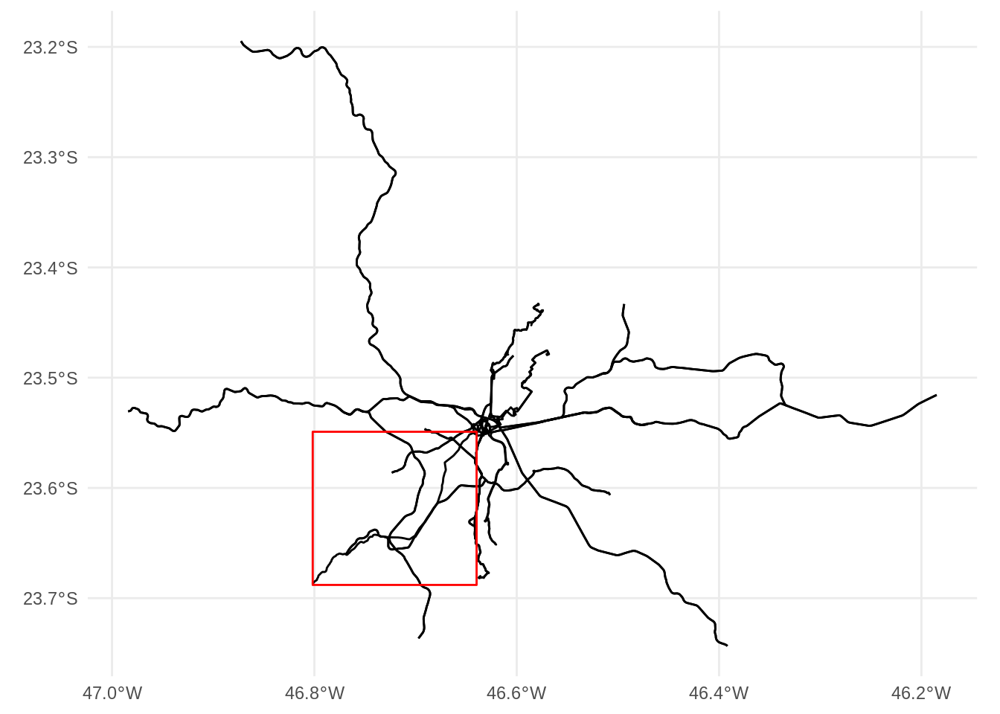
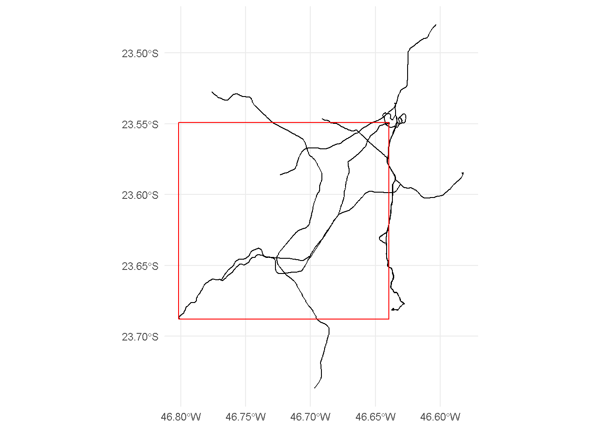
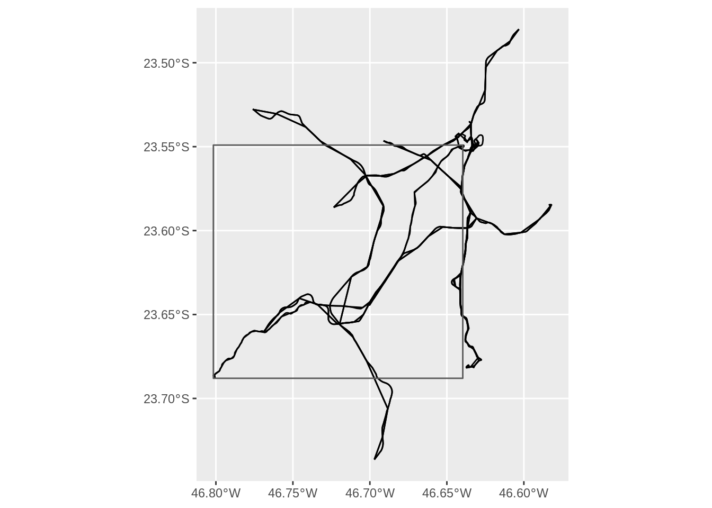
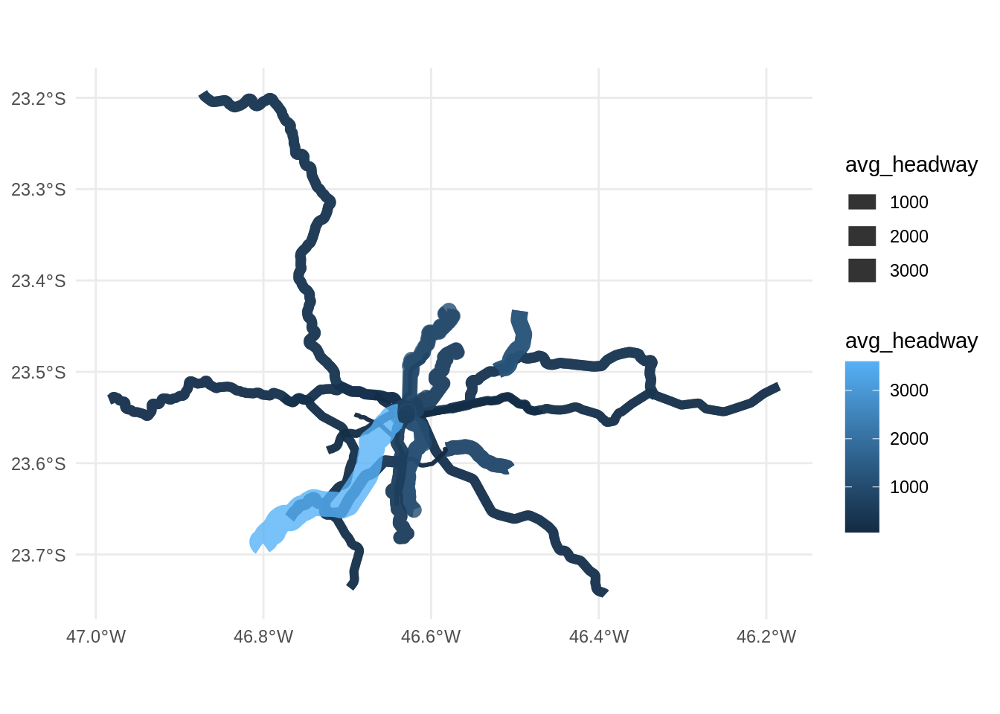

Usualmente, arquivos GTFS provenientes de fontes oficiais são utilizados para desenvolver análises e pesquisas que possuem diversos elementos comuns. Visando facilitar a leitura, o processamento e a análise desses dados, a equipe do Projeto Acesso a Oportunidades vem desenvolvendo o pacote de R {gtfstools}1(Herszenhut et al. 2022), que oferece diversas funções que facilitam a manipulação e a exploração de feeds.
Neste capítulo, nós iremos passar por algumas das funcionalidades mais frequentemente utilizadas do pacote. Para isso, vamos utilizar uma amostra do feed da SPTrans apresentado no capítulo anterior, disponível dentro do {gtfstools}.
5.1 Leitura e manipulação básica de arquivos GTFS
A leitura de arquivos GTFS com o {gtfstools} é feita com a função read_gtfs(), que recebe uma string com o caminho do arquivo. Após sua leitura, o feed é representado como uma lista de data.tables, uma versão de alta performance da classe data.frame. Ao longo deste capítulo, nós vamos nos referir a esta lista de tabelas como um objeto GTFS. Por padrão, a função lê todas as tabelas .txt do feed:
# carrega bibliotecalibrary(gtfstools)# aponta string com endereço do arquivofile_path <-system.file("extdata/spo_gtfs.zip", package ="gtfstools")# leitura do gtfsgtfs <-read_gtfs(path = file_path)# consulta o nome das tabelas dentro da listanames(gtfs)
Como podemos ver, cada data.table dentro do objeto GTFS é nomeado de acordo com a tabela que ele representa, sem a extensão .txt. Isso nos permite selecionar e manipular cada uma das tabelas separadamente. O código abaixo, por exemplo, mostra os 6 primeiros registros da tabela trips:
As tabelas dentro de um objeto GTFS podem ser facilmente manipuladas usando a sintaxe do pacote {data.table}. Este pacote oferece diversas funcionalidades úteis, principalmente para a manipulação de tabelas com uma grande quantidade de registros, como a edição de colunas por referência, filtros de linhas muito rápidos e agregação de dados eficiente2. Para adicionar 100 segundos a todos os headways listados na tabela frequencies e reverter essa mudança em seguida, por exemplo, nós podemos usar o código abaixo:
Após editarmos um objeto GTFS no R, frequentemente vamos querer usar o GTFS manipulado para fazer análises de diferentes tipos. Para isso, é comum que precisemos do arquivo GTFS em formato .zip novamente, e não como uma lista de tabelas dentro do R. O pacote {gtfstools} disponibiliza a função write_gtfs() exatamente com a finalidade de transformar objetos GTFS que existem apenas dentro do R em arquivos GTFS armazenados no seu computador. Para usar esta função, é necessário apenas listar o objeto e o endereço no qual o arquivo deve ser salvo:
# aponta endereço onde arquivo deve ser salvodest_path <-tempfile("new_gtfs", fileext =".zip")# salve GTFS localmentewrite_gtfs(gtfs, dest_path)# listar arquivos dentro do feed salvozip::zip_list(dest_path)[, c("filename", "compressed_size", "timestamp")]
Arquivos GTFS são frequentemente utilizados em estimativas de roteamento de transporte público e para informar passageiros sobre a tabela de horários das diferentes rotas que operam em uma região. Dessa forma, é extremamente importante que o cronograma das viagens e a velocidade operacional de cada linha estejam adequadamente descritos no feed.
O {gtfstools} disponibiliza a função get_trip_speed() para facilitar o cálculo da velocidade de cada viagem presente no feed. Por padrão, a função retorna a velocidade (em km/h) de todas as viagens do GTFS, mas viagens individuais também podem ser especificadas:
# calcular velocidade de todas viagensspeeds <-get_trip_speed(gtfs)head(speeds)
Calcular a velocidade de uma viagem requer que nós saibamos o seu comprimento e em quanto tempo ela foi realizada. Para isso, portanto, a get_trip_speed() utiliza duas outras funções do {gtfstools} por trás dos panos: a get_trip_length() e a get_trip_duration(). O funcionamento das duas é muito parecido com o mostrado anteriormente, retornando o comprimento/duração de todas as viagens por padrão, ou de apenas algumas selecionadas, caso desejado. Abaixo nós mostramos seus comportamentos padrões:
# distância percorrida de todas viagenslength <-get_trip_length(gtfs, file ="shapes")head(length)
Assim como a get_trip_speed() retorna velocidades em km/h por padrão, a get_trip_length() retorna os comprimentos em km e a get_trip_duration() retorna a duração em minutos. Essas unidades podem ser ajustadas com o argumento unit, presente em todas as funções.
5.3 Combinando e filtrando feeds
Muitas vezes o processamento e a edição de arquivos GTFS é realizado, em grande medida, manualmente. Consequentemente, pequenas inconsistências podem passar batidas pelos responsáveis por esse processamento. Um problema comumente observado em feeds é a presença de registros duplicados em uma mesma tabela. O feed da SPTrans, por exemplo, possui registros duplicados tanto no agency.txt quanto no calendar.txt:
O {gtfstools} disponibiliza a função remove_duplicates() para remover essas duplicatas. Esta função recebe como input um objeto GTFS e retorna o mesmo objeto, porém sem registros duplicados:
# removendo valores duplicadosno_dups_gtfs <-remove_duplicates(gtfs)# checagem do resultadono_dups_gtfs$agency
Frequentemente, também, lidamos com múltiplos feeds em uma mesma área de estudo. Por exemplo, quando os dados dos sistemas de ônibus e de trens de uma mesma cidade estão salvos em arquivos GTFS separados. Neste caso, muitas vezes gostaríamos de uni-los em um único arquivo, diminuindo assim o esforço de manipulação e processamento dos dados. Para isso, o {gtfstools} disponibiliza a função merge_gtfs(). O exemplo abaixo mostra o resultado da combinação de dois feeds distintos, o da SPTrans (sem duplicatas) e o da EMTU, de Porto Alegre:
# leitura do GTFS de Porto Alegrepoa_path <-system.file("extdata/poa_gtfs.zip", package ="gtfstools")poa_gtfs <-read_gtfs(poa_path)poa_gtfs$agency
agency_id agency_name agency_url
1: EPTC Empresa Publica de Transportes e Circulação http://www.eptc.com.br
agency_timezone agency_lang agency_phone
1: America/Sao_Paulo pt 156
agency_fare_url
1: http://www2.portoalegre.rs.gov.br/eptc/default.php?p_secao=155
# Combinando GTFS de Porto Alegre e São Paulocombined_gtfs <-merge_gtfs(no_dups_gtfs, poa_gtfs)# checagem dos resultadoscombined_gtfs$agency
agency_id agency_name
1: 1 SPTRANS
2: EPTC Empresa Publica de Transportes e Circulação
agency_url agency_timezone agency_lang
1: http://www.sptrans.com.br/?versao=011019 America/Sao_Paulo pt
2: http://www.eptc.com.br America/Sao_Paulo pt
agency_phone agency_fare_url
1:
2: 156 http://www2.portoalegre.rs.gov.br/eptc/default.php?p_secao=155
Como podemos ver, os registros das tabelas de ambos os feeds foram combinados em uma única tabela. Este é o caso quando os dois (ou mais, caso desejado) objetos GTFS possuem registros de uma mesma tabela (a agency, no exemplo). Caso apenas um dos objetos possua uma das tabelas, o resultado da operação de combinação copia esta tabela para o resultado final. É o caso, por exemplo, da tabela frequencies, que existe apenas no feed da SPTrans, mas não no da EMTU:
Um outro tipo de operação muito utilizada no tratamento de arquivos GTFS é o de filtragem desses arquivos. Frequentemente, feeds são usados para descrever redes de transporte público de grande escala, o que pode transformar sua edição, análise e compartilhamento em operações mais complexas. Por esse motivo, pesquisadores e planejadores muitas vezes precisar trabalhar com um subconjunto de dados descritos nos feeds. Por exemplo, caso desejemos estimar a performance da rede de transporte em uma determinada região no horário de pico da manhã, podemos filtrar o nosso arquivo GTFS de modo a manter apenas os registros referentes a viagens que ocorrem nesse intervalo do dia.
O pacote {gtfstools} traz diversas funções para facilitar a filtragem de arquivos GTFS. São elas:
filter_by_agency_id()
filter_by_route_id()
filter_by_service_id()
filter_by_shape_id()
filter_by_stop_id()
filter_by_trip_id()
filter_by_route_type()
filter_by_weekday()
filter_by_time_of_day()
filter_by_sf()
Filtro por identificadores
As seis primeiras (filter_by_agency_id(), filter_by_route_id(), filter_by_service_id(), filter_by_shape_id(), filter_by_stop_id() e filter_by_trip_id()) funcionam de forma muito similar. O usuário deve especificar um vetor de identificadores, e a função mantém no objeto GTFS apenas os registros referentes a esses identificadores. O exemplo abaixo demonstra essa funcionalidade com a filter_by_trip_id():
# checando tamanho do feed antes do filtroutils::object.size(gtfs)
# filtro mantendo apenas duas viagenssmaller_gtfs <-filter_by_trip_id(gtfs, trip_id =c("CPTM L07-0", "CPTM L07-1"))# checando tamanho do feed após o filtroutils::object.size(smaller_gtfs)
O código acima mostra que a função não filtra apenas a tabela trips, mas também as outras tabelas que fazem referência aos identificadores especificados. Por exemplo, a trajetória das viagens CPTM L07-0 and CPTM L07-1 é descrita pelos shape_ids 17846 and 17847, respectivamente. Esses são, portanto, os únicos identificadores da tabela shapes mantidos no GTFS filtrado.
A função também pode funcionar com o comportamento diametralmente oposto: em vez de definirmos os identificadores cujos registros devem ser mantidos no feed, podemos especificar os identificadores que devem ser retirados dele. Para isso, usamos o argumento keep com valor FALSE:
# filtro removendo duas viagens do feedsmaller_gtfs <-filter_by_trip_id( gtfs,trip_id =c("CPTM L07-0", "CPTM L07-1"),keep =FALSE)head(smaller_gtfs$trips[, .(trip_id, trip_headsign, shape_id)])
trip_id trip_headsign shape_id
1: CPTM L08-0 AMADOR BUENO 17848
2: CPTM L08-1 JULIO PRESTES 17849
3: CPTM L09-0 GRAJAU 17850
4: CPTM L09-1 OSASCO 17851
5: CPTM L10-0 RIO GRANDE DA SERRA 17852
6: CPTM L10-1 BRÁS 17853
Como podemos ver, as viagens especificadas, bem como suas trajetórias, não estão presentes no GTFS filtrado. A mesma lógica aqui demonstrada com a filter_by_trip_id() é válida para as funções que filtram objetos GTFS pelos identificadores agency_id, route_id, service_id, shape_id, stop_id e route_type.
Filtro por dia e hora
Outra operação que recorrentemente aparece em análises que envolvem dados GTFS é a de manter serviços que funcionem apenas em determinados horários do dia ou dias da semana. Para isso, o pacote disponibiliza as funções filter_by_weekday() e filter_by_time_of_day().
A filter_by_weekday() recebe os dias da semana (em inglês) cujos serviços que neles operam devem ser mantidos. Adicionalmente, a função também inclui o argumento combine, que define como filtros de dois ou mais dias funcionam. Quando este recebe o valor ”and”, apenas serviços que operam em todos os dias especificados são mantidos. Quando recebe o valor ”or”, serviços que operam em pelo menos um dos dias são mantidos:
# filtro mantendo apenas serviços que operam no sábado e no domingosmaller_gtfs <-filter_by_weekday(gtfs = no_dups_gtfs,weekday =c("saturday", "sunday"),combine ="and")smaller_gtfs$calendar[, c("service_id", "sunday", "saturday")]
service_id sunday saturday
1: USD 1 1
2: _SD 1 1
# filtro mantendo apenas serviços que operam ou sábado ou no domingosmaller_gtfs <-filter_by_weekday(gtfs = no_dups_gtfs,weekday =c("sunday", "saturday"),combine ="or")smaller_gtfs$calendar[, c("service_id", "sunday", "saturday")]
A filter_by_time_of_day(), por sua vez, recebe o começo e o final de uma janela de tempo e mantém os registros relacionados a viagens que rodam dentro dessa janela de horário. O funcionamento da função depende da presença ou não da tabela frequencies no GTFS: o cronograma descrito na stop_times das viagens descritas na tabela frequencies não deve ser filtrado, pois, como comentado no capítulo anterior, ele serve como um modelo que dita o tempo de viagem entre uma parada e outra. Caso a frequencies esteja ausente, no entanto, a stop_times é filtrada segundo o intervalo de tempo especificado. Vamos ver como isso funciona com um exemplo:
# filtro mantendo apenas viagens dentro do período de 5 às 6 da manhãsmaller_gtfs <-filter_by_time_of_day(gtfs, from ="05:00:00", to ="06:00:00")head(smaller_gtfs$frequencies)
O filtro da tabela stop_times pode funcionar de duas formas distintas. Uma opção é manter intactas todas as viagens que cruzam a janela de tempo especificada. A outra é manter apenas os segmentos de viagens que ocorrem dentro da janela (comportamento padrão da função). Este comportamento é controlado com o parâmetro full_trips, como mostrado a seguir (atenção aos horários e aos segmentos presentes em cada exemplo):
# filtro mantendo apenas viagens inteiramente dentro do período de 5 às 6 da manhãsmaller_gtfs <-filter_by_time_of_day( gtfs,from ="05:00:00", to ="06:00:00",full_trips =TRUE)head( smaller_gtfs$stop_times[,c("trip_id", "departure_time", "arrival_time", "stop_sequence") ])
# filtro mantendo apenas viagens que do período que estão funcionando entre 5 e 6 da manhãsmaller_gtfs <-filter_by_time_of_day( gtfs,from ="05:00:00",to ="06:00:00",full_trips =FALSE)head( smaller_gtfs$stop_times[,c("trip_id", "departure_time", "arrival_time", "stop_sequence") ])
Por fim, o pacote {gtfstools} também disponibiliza uma função que permite filtrar o objeto GTFS usando um polígono espacial. A filter_by_sf() recebe um objeto do tipo sf/sfc (representação espacial estabelecida pelo pacote sf), ou sua bounding box, e mantém os registros cujas viagens são selecionadas por uma operação espacial especificada pelo usuário. Embora aparentemente complicado, este processo de filtragem é muito facilmente compreendido quando apresentado visualmente. Para isso, vamos filtrar o GTFS da SPTrans pela bouding box da trajetória de id68962. O código abaixo apresenta a distribuição espacial dos dados não filtrados, com a bounding box destacada em vermelho:
# carrega biblioteca ggplot2 para visualização de dadoslibrary(ggplot2)shape_68962 <-convert_shapes_to_sf(gtfs, shape_id ="68962")bbox <- sf::st_bbox(shape_68962)shapes <-convert_shapes_to_sf(gtfs)bbox_geom <- sf::st_as_sfc(bbox)ggplot() +geom_sf(data = shapes) +geom_sf(data = bbox_geom, fill =NA, color ="red") +theme_minimal()

Note que nós usamos a função convert_shapes_to_sf(), também disponibilizada pelo {gtfstools}, que converte uma determinada trajetória descrita no GTFS em um objeto espacial do tipo sf. Por padrão, a filter_by_sf() mantém os dados relacionados aos registros de viagens cujas trajetórias possuem alguma interseção com o polígono espacial selecionado:
filtered_gtfs <-filter_by_sf(gtfs, bbox, spatial_operation = sf::st_intersects)filtered_shapes <-convert_shapes_to_sf(filtered_gtfs)ggplot() +geom_sf(data = filtered_shapes) +geom_sf(data = bbox_geom, fill =NA, color ="red") +theme_minimal()

Nós podemos, no entanto, controlar a operação espacial usada no processo de filtragem. Por exemplo, o código abaixo mostra como nós podemos manter os dados relacionados a viagens que estão contidas dentro do polígono espacial:
filtered_gtfs <-filter_by_sf(gtfs, bbox, spatial_operation = sf::st_contains)filtered_shapes <-convert_shapes_to_sf(filtered_gtfs)ggplot() +geom_sf(data = filtered_shapes) +geom_sf(data = bbox_geom, fill =NA, color ="red") +theme_minimal()

5.4 Mapeamento do headway das linhas
Como mostrado nas seções anteriores, o {gtfstools} disponibiliza uma grande caixa de ferramentas que podem ser usadas no processamento e na análise de arquivos GTFS. O pacote, no entanto, oferece diversas outras funções que não podem ser apresentadas neste livro, por questões de espaço. A lista completa de funções disponíveis pode ser conferida no site do pacote.
A apresentação das funções feitas até aqui tem um importante caráter demonstrativo, porém não mostra como elas podem ser usadas de forma conjunta no desenvolvimento de uma análise de um arquivo GTFS. Esta seção preenche esta lacuna, mostrando como o pacote pode ser usado, por exemplo, para responder a seguinte pergunta: como se distribuem espacialmente os tempos entre veículos de uma mesma linha (ou seja, o headway) no GTFS da SPTrans?
A primeira etapa é definir o escopo da nossa análise. A fim de exemplo, vamos considerar o headway no pico da manhã, entre 7h e 9h, em uma típica terça-feira de operação. Para isso, precisamos filtrar o nosso feed:
# ler dados de GTFSgtfs <-read_gtfs(path = file_path)# filtrando GTFSfiltered_gtfs <- gtfs |>remove_duplicates() |>filter_by_weekday("tuesday") |>filter_by_time_of_day(from ="07:00:00", to ="09:00:00")# checando resultado do filtrofiltered_gtfs$frequencies[trip_id =="2105-10-0"]
Em seguida, precisamos calcular o headway dentro do período estabelecido. Essa informação pode ser encontrada na tabela frequencies, porém há um elemento complicador: cada viagem está associada a mais de um headway, como podemos ver acima (um registro para o período entre 7:00h e 7:59h e outro para o período entre entre 8:00h e 8:59h). Para resolver esta questão, portanto, vamos calcular o headway médio no intervalo entre 7:00h e 9:00h.
Os primeiros registros da tabela frequencies do GTFS da SPTrans parecem sugerir que os períodos do dia estão listados sempre de uma em uma hora, porém isto não é uma regra estabelecida na especificação GTFS e nem é a prática adotada em outros GTFS. Por isso, nós vamos calcular a média ponderada do headway no período especificado. Para isso, precisamos multiplicar cada headway pelo intervalo de tempo em que ele é válido, e dividir o total desta soma pelo intervalo de tempo total (duas horas). Para calcular o intervalo de tempo em que cada headway é válido, nós usamos a função convert_time_to_seconds() para calcular o começo e o fim do intervalo em segundos e subtraímos o valor do fim pelo do começo, como abaixo:
Precisamos agora gerar a trajetória espacial de cada viagem e juntar esta informação à do headway médio. Para isso, vamos utilizar a função get_trip_geometry(), que, dado um objeto GTFS, retorna a trajetória espacial de suas viagens. Esta função nos permite especificar de quais viagens nós queremos as trajetórias, logo vamos calcular apenas as daquelas que estão presentes na tabela de headways médios:
O objeto geoms está no formato sf, e não no data.table, que precisamos que ele esteja para juntarmos à tabela de headways. Depois de convertê-lo para o formato adequado e juntá-lo à tabela de headways, precisamos apenas configurar o nosso mapa como desejado. No exemplo abaixo, nós usamos cores e espessuras de linhas que variam de acordo com o headway de cada viagem:
library(data.table)library(sf)# converte objeto em data.table e faz ‘merge’ para fazer as infos espaciaissetDT(geoms)avg_headway[geoms, on ="trip_id", geometry := i.geometry]# converte objeto de volta para sf para poder fazer o mapaavg_headway_sf <-st_sf(avg_headway)# plotar figuraggplot(avg_headway_sf) +geom_sf(aes(color = avg_headway, size = avg_headway), alpha =0.8) +theme_minimal()

Como podemos ver, o pacote {gtfstools} torna o desenvolvimento de análises de feeds de transporte público algo fácil e que requer apenas o conhecimento básico de pacotes de manipulação de tabela (como o {data.table} ou o {dplyr}) para grande parte das etapas que as compõem. O exemplo apresentado nesta seção mostra como muitas de suas funções podem ser usadas conjuntamente para revelar aspectos importantes de sistemas de transporte público descritos no formato GTFS.
Herszenhut, Daniel, Rafael H. M. Pereira, Pedro R. Andrade, and João Bazzo. 2022. “Gtfstools: General Transit Feed Specification (GTFS) Editing and Analysing Tools.” Zenodo. https://doi.org/10.5281/ZENODO.6577028.